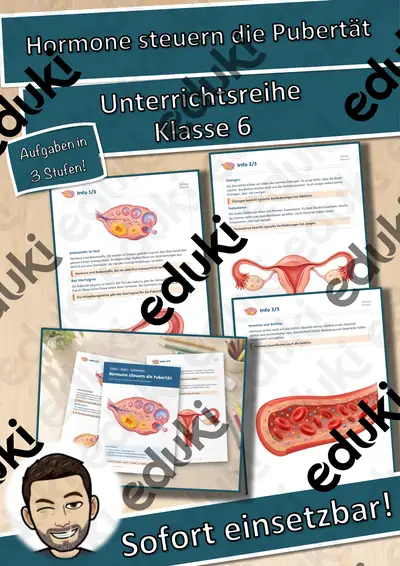
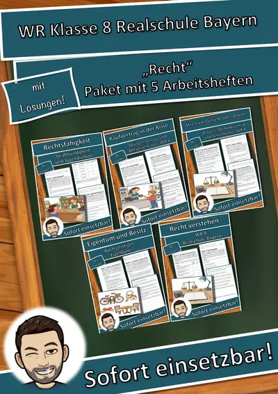

Kind Lückentext mit Wortspeicher Hörverstehen und Suchsel
Kind – Lückentext mit Wortspeicher & Suchsel | Sachtexte Pädagogik | Klasse 4–7 | mit Lösungen
Mit diesem abwechslungsreichen Arbeitsblatt lernen Ihre Schülerinnen und Schüler das Kind als Lebensphase auf motivierende Weise kennen. Der kindgerechte Sachtext vermittelt wichtige Informationen zur Definition vom Säuglingsalter bis zur Pubertät, zu den Rechten von Kindern, zur Schulpflicht in Deutschland und zur Bedeutung des Kindergartens. Anschließend sichern die Kinder ihr Wissen durch einen Lückentext mit Wortspeicher und ein passendes Suchsel.✔ Sachtext in einfacher Sprache✔ Lückentext mit Wortspeicher✔ Suchsel zur Wiederholung wichtiger Begriffe✔ Inklusive vollständiger Lösungen✔ Sofort einsetzbar ohne Vorbereitung✔ Ideal für Vertretungsstunden, Freiarbeit, Stationenlernen und Unterrichtseinheiten
Lehrplanbezug (Grundschule und Sekundarstufe I):Das Material fördert die Lesekompetenz, das sinnerfassende Lesen, die Entnahme von Informationen aus Sachtexten sowie pädagogisches und gesellschaftliches Grundwissen. Es eignet sich besonders für die Bereiche Heimat- und Sachunterricht, Deutsch, Sozialkunde, Gesundheitserziehung sowie für fächerübergreifendes Lernen.
Enthalten sind:
- Sachtext mit Lückentext
- Suchsel
- Musterlösung zum Lückentext
- Musterlösung zum Suchsel
- PDF-Datei zum direkten Ausdrucken
Ideal für Lehrkräfte, die schnell ein motivierendes Material zum Thema Kind, zu Kinderrechten oder zur Förderung der Lesekompetenz mit pädagogischen Texten suchen.
So setzen Sie das Material im Unterricht ein: Bewährt hat sich der Einstieg über das Hörverstehen – die Klasse scannt den QR-Code, hört den kindgerecht vertonten Sachtext zu „Kind“ und tauscht erstes Vorwissen aus. In der Erarbeitungsphase lesen die Schülerinnen und Schüler den Sachtext in Ruhe und füllen den Lückentext aus; der Wortspeicher gibt dabei Sicherheit und entlastet das Arbeitsgedächtnis. Differenzierung leicht gemacht: Schnelle Lerner bearbeiten den Lückentext mit abgedecktem Wortspeicher, für DaZ/DaF-Lernende und den Förderunterricht dient er als gezielte Wortschatzstütze. Zur Festigung suchen die Kinder im Suchsel acht zentrale Begriffe des Themas – ideal auch als Puffer für schnelle Gruppen oder als Hausaufgabe. Die beiliegende Musterlösung ermöglicht Selbstkontrolle in der Freiarbeit, im Wochenplan und in Vertretungsstunden. Das Material ist ohne Vorbereitung einsetzbar: ausdrucken, austeilen, loslegen.
Passend zu den aktuellen Lehrplänen in Deutschland, Österreich und der Schweiz: Das Arbeitsblatt trainiert genau das, was die Bildungsstandards der Kultusministerkonferenz im Kompetenzbereich „Lesen – mit Texten und Medien umgehen“ fordern – sinnerfassendes Lesen, gezielte Informationsentnahme aus Sachtexten und die Sicherung des Fachwortschatzes. Damit lässt es sich in allen 16 Bundesländern und Schularten direkt einsetzen, etwa im Lernbereich „Lesen – mit Texten und weiteren Medien umgehen“ des bayerischen LehrplanPLUS, im Bereich „Texte und andere Medien“ des Bildungsplans Baden-Württemberg oder im Basiscurriculum Sprachbildung des Rahmenlehrplans Berlin-Brandenburg. Im österreichischen Lehrplan entspricht das dem Kompetenzbereich „Lesen – Umgang mit Texten und Medien“ in Volksschule, Mittelschule und AHS-Unterstufe, im Schweizer Lehrplan 21 dem Fachbereich Deutsch D.2 „Lesen“ mit dem Schwerpunkt „Verstehen von Sachtexten“ (Zyklus 2 und 3). Wortspeicher und Lückentext stützen zudem den systematischen Wortschatzaufbau in Deutsch als Zweitsprache (DaZ/DaF).Mit seinem Thema „Kind“ gehört das Blatt zudem in den Sozialkunde/Politische Bildung-Unterricht – hier greifen im Heimat- und Sachunterricht der Lernbereich „Demokratie und Gesellschaft“, in Österreich der Erfahrungs- und Lernbereich „Gemeinschaft“, im Lehrplan 21 die Kompetenz „Gemeinschaft und Gesellschaft – Zusammenleben gestalten“ (NMG.10) – und es bietet direkte Anknüpfungspunkte im Fach Gesundheitsbildung: im Heimat- und Sachunterricht der Lernbereich „Körper und Gesundheit“, im Lehrplan 21 die Kompetenz „Identität, Körper, Gesundheit – sich Sorge tragen“ (NMG.1).
Ähnliche Materialien

Pädagogik Lückentext mit Wortspeicher Hörverstehen und Suchsel

Pubertät Lückentext mit Wortspeicher Hörverstehen und Suchsel

Hormone steuern die Pubertät – Unterrichtsreihe (Klasse 6)

Recht Lückentext mit Wortspeicher Hörverstehen und Suchsel

Lesespur: Ich bin ich: Selbstwert, Stärken und Gefühle in der Pubertät – Lesespurgeschichte mit Rätseln (Klasse 7)

Materialpaket WR Klasse 8/9 Realschule Bayern – Recht und Arbeit: 4 Arbeitshefte mit Lösungen

Materialpaket WR Klasse 8 Realschule Bayern – Recht: 5 Arbeitshefte mit Lösungen